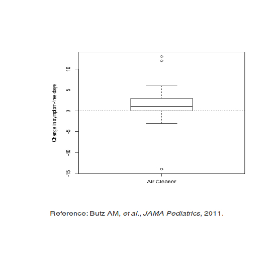
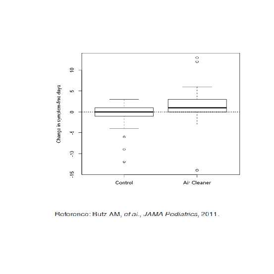
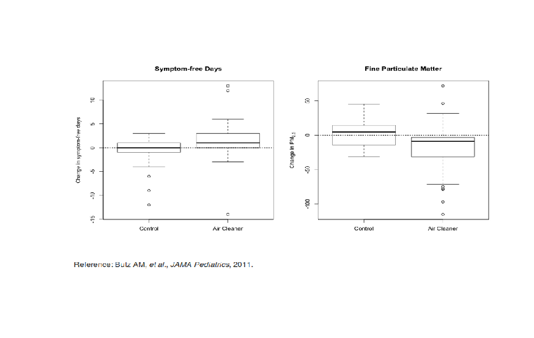
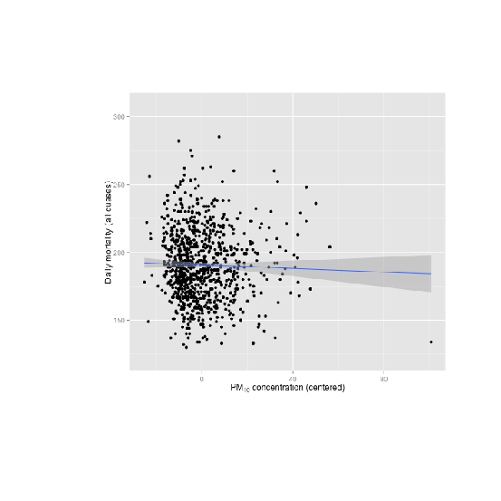
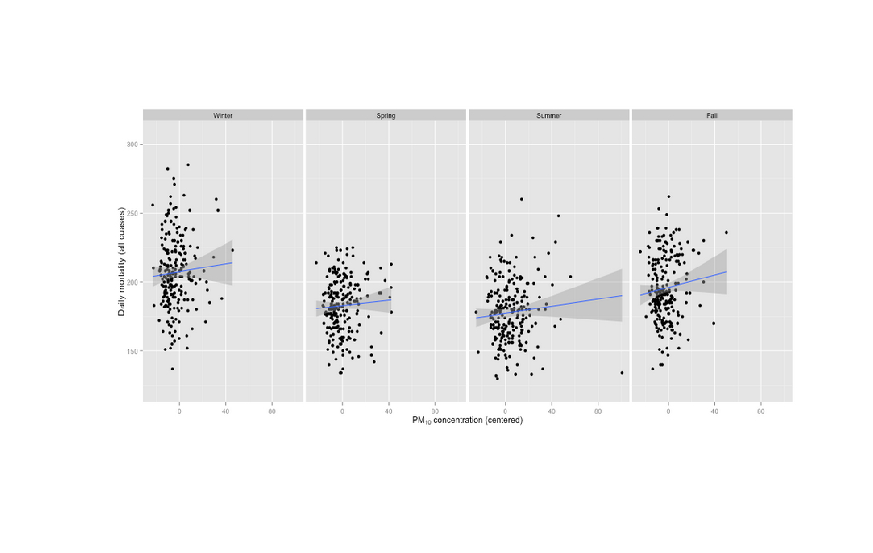
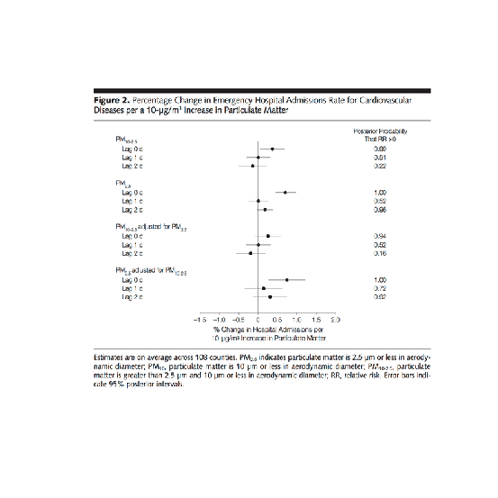

Principles of Analytic Graphs
R version 4.0.0 (2020-04-24) -- "Arbor Day"
Copyright (C) 2020 The R Foundation for Statistical Computing
Platform: x86_64-w64-mingw32/x64 (64-bit)
R is free software and comes with ABSOLUTELY NO WARRANTY.
You are welcome to redistribute it under certain conditions.
Type 'license()' or 'licence()' for distribution details.
R is a collaborative project with many contributors.
Type 'contributors()' for more information and
'citation()' on how to cite R or R packages in publications.
Type 'demo()' for some demos, 'help()' for on-line help, or
'help.start()' for an HTML browser interface to help.
Type 'q()' to quit R.
[Workspace loaded from C:/Users/kk/PortableApps/Git/home/k-allika/repos/DataScienceWithR/.RData]
setwd("C:/Users/kk/PortableApps/Git/home/k-allika/repos/DataScienceWithR/04_Exploratory_Data_Analysis/week01/workspace")
library(swirl)
| Hi! I see that you have some variables saved in your workspace. To keep things running
| smoothly, I recommend you clean up before starting swirl.
| Type ls() to see a list of the variables in your workspace. Then, type rm(list=ls()) to
| clear your workspace.
| Type swirl() when you are ready to begin.
swirl()
| Welcome to swirl! Please sign in. If you've been here before, use the same name as you did
| then. If you are new, call yourself something unique.
What shall I call you? Krishnakanth Allika
| Please choose a course, or type 0 to exit swirl.
1: Exploratory Data Analysis
2: Getting and Cleaning Data
3: R Programming
4: Take me to the swirl course repository!
Selection: 1
| Please choose a lesson, or type 0 to return to course menu.
1: Principles of Analytic Graphs 2: Exploratory Graphs
3: Graphics Devices in R 4: Plotting Systems
5: Base Plotting System 6: Lattice Plotting System
7: Working with Colors 8: GGPlot2 Part1
9: GGPlot2 Part2 10: GGPlot2 Extras
11: Hierarchical Clustering 12: K Means Clustering
13: Dimension Reduction 14: Clustering Example
15: CaseStudy
Selection: 1
| Attempting to load lesson dependencies...
| Package ‘jpeg’ loaded correctly!
| | 0%
| Principles_of_Analytic_Graphs. (Slides for this and other Data Science courses may be
| found at github https://github.com/DataScienceSpecialization/courses/. If you care to use
| them, they must be downloaded as a zip file and viewed locally. This lesson corresponds to
| 04_ExploratoryAnalysis/Principles_of_Analytic_Graphics.)
...
|== | 3%
| In this lesson, we'll discuss some basic principles of presenting data effectively. These
| will illustrate some fundamental concepts of displaying results in order to make them more
| meaningful and convincing. These principles are cribbed from Edward Tufte's great 2006
| book, Beautiful Evidence. You can read more about them at the www.edwardtufte.com website.
...
|===== | 6%
| As a warm-up, which of the following would NOT be a good use of analytic graphing?
1: To show causality, mechanism, explanation
2: To show multivariate data
3: To decide which horse to bet on at the track
4: To show comparisons
Selection: 3
| Keep up the great work!
|======= | 8%
| You're ready to start. Graphs give us a visual form of data, and the first principle of
| analytic graphs is to show some comparison. You'll hear more about this when you study
| statistical inference (another great course BTW), but evidence for a hypothesis is always
| relative to another competing or alternative hypothesis.
...
|========= | 11%
| When presented with a claim that something is good, you should always ask "Compared to
| What?" This is why in commercials you often hear the phrase "other leading brands". An
| implicit comparison, right?
...
|============ | 14%
| Consider this boxplot which shows the relationship between the use of an air cleaner and
| the number of symptom-free days of asthmatic children. (The top and bottom lines of the
| box indicate the 25% and 75% quartiles of the data, and the horizontal line in the box
| shows the 50%.) Since the box is above 0, the number of symptom-free days for children
| with asthma is bigger using the air cleaner. This is good, right?
...

|============== | 17%
| How many days of improvement does the median correspond to?
1: 4
2: -2
3: 1
4: 12
Selection: 3
| That's correct!
|================ | 19%
| While it's somewhat informative, it's also somewhat cryptic, since the y-axis is claiming
| to show a change in number of symptom-free days. Wouldn't it be better to show a
| comparison?
...
|================== | 22%
| Like this? Here's a graphic which shows two boxplots, the one on the left showing the
| results for a control group that doesn't use an air cleaner alongside the previously shown
| boxplot.
...
|===================== | 25%
| By showing the two boxplots side by side, you can clearly see that using the air cleaner
| increases the number of symptom-free days for most asthmatic children. The plot on the
| right (using the air cleaner) is generally higher than the one on the left (the control
| group).
...

|======================= | 28%
| What does this graph NOT show you?
1: Half the chidren in the control group had no improvement
2: Children in the control group had at most 3 symptom-free days
3: 75% of the children using the air cleaner had at most 3 symptom-free days
4: Using the air cleaner makes asthmatic children sicker
Selection: 4
| You're the best!
|========================= | 31%
| So the first principle was to show a comparison. The second principle is to show causality
| or a mechanism of how your theory of the data works. This explanation or systematic
| structure shows your causal framework for thinking about the question you're trying to
| answer.
...
|============================ | 33%
| Consider this plot which shows the dual boxplot we just showed, but next to it we have a
| corresponding plot of changes in measures of particulate matter.
...

|============================== | 36%
| This picture tries to explain how the air cleaner increases the number of symptom-free
| days for asthmatic children. What mechanism does the graph imply?
1: That the air cleaner increases pollution
2: That the air cleaner reduces pollution
3: That the children in the control group are healthier
4: That the air in the control group is cleaner than the air in the other group
Selection: 2
| You are amazing!
|================================ | 39%
| By showing the two sets of boxplots side by side you're explaining your theory of why the
| air cleaner increases the number of symptom-free days. Onward!
...
|=================================== | 42%
| So the first principle was to show some comparison, the second was to show a mechanism, so
| what will the third principle say to show?
...
|===================================== | 44%
| Multivariate data!
...
|======================================= | 47%
| What is multivariate data you might ask? In technical (scientific) literature this term
| means more than 2 variables. Two-variable plots are what you saw in high school algebra.
| Remember those x,y plots when you were learning about slopes and intercepts and equations
| of lines? They're valuable, but usually questions are more complicated and require more
| variables.
...
|========================================== | 50%
| Sometimes, if you restrict yourself to two variables you'll be misled and draw an
| incorrect conclusion.
...
|============================================ | 53%
| Consider this plot which shows the relationship between air pollution (x-axis) and
| mortality rates among the elderly (y-axis). The blue regression line shows a surprising
| result. (You'll learn about regression lines when you take the fabulous Regression Models
| course.)
...

|============================================== | 56%
| What does the blue regression line indicate?
1: Pollution doesn't really increase, it just gets reported more
2: As pollution increases fewer people die
3: As pollution increases the number of deaths doesn't change
4: As pollution increases more people die
Selection: 2
| Excellent job!
|================================================ | 58%
| Fewer deaths with more pollution? That's a surprise! Something's gotta be wrong, right? In
| fact, this is an example of Simpson's paradox, or the Yule–Simpson effect. Wikipedia
| (http://en.wikipedia.org/wiki/Simpson%27s_paradox) tells us that this "is a paradox in
| probability and statistics, in which a trend that appears in different groups of data
| disappears when these groups are combined."
...
|=================================================== | 61%
| Suppose we divided this mortality/pollution data into the four seasons. Would we see
| different trends?
...
|===================================================== | 64%
| Yes, we do! Plotting the same data for the 4 seasons individually we see a different
| result.
...

|======================================================= | 67%
| What does the new plot indicate?
1: Pollution doesn't really increase, it just gets reported more
2: As pollution increases the seasons change
3: As pollution increases more people die in all seasons
4: As pollution increases fewer people die in all seasons
Selection: 3
| That's correct!
|========================================================== | 69%
| The fourth principle of analytic graphing involves integrating evidence. This means not
| limiting yourself to one form of expression. You can use words, numbers, images as well as
| diagrams. Graphics should make use of many modes of data presentation. Remember, "Don't
| let the tool drive the analysis!"
...
|============================================================ | 72%
| To show you what we mean, here's an example of a figure taken from a paper published in
| the Journal of the AMA. It shows the relationship between pollution and hospitalization of
| people with heart disease. As you can see, it's a lot different from our previous plots.
| The solid circles in the center portion indicate point estimates of percentage changes in
| hospitalization rates for different levels of pollution. The lines through the circles
| indicate confidence intervals associated with these estimates. (You'll learn more about
| confidence intervals in another great course, the one on statistical inference.)

...
|============================================================== | 75%
| Note that on the right side of the figure is another column of numbers, one for each of
| the point estimates given. This column shows posterior probabilities that relative risk is
| greater than 0. This, in effect, is a measure of the strength of the evidence showing the
| correlation between pollution and hospitalization. The point here is that all of this
| information is located in one picture so that the reader can see the strength of not only
| the correlations but the evidence as well.
...
|================================================================= | 78%
| The fifth principle of graphing involves describing and documenting the evidence with
| sources and appropriate labels and scales. Credibility is important so the data graphics
| should tell a complete story. Also, using R, you want to preserve any code you use to
| generate your data and graphics so that the research can be replicated if necessary. This
| allows for easy verification or finding bugs in your analysis.
...
|=================================================================== | 81%
| The sixth and final principle of analytic graphing is maybe the most important. Content is
| king! If you don't have something interesting to report, your graphs won't save you.
| Analytical presentations ultimately stand or fall depending on the quality, relevance, and
| integrity of their content.
...
|===================================================================== | 83%
| Review time!!!
...
|======================================================================= | 86%
| Which of the following is NOT a good principle of graphing?
1: To integrate multiple modes of evidence
2: Having unreadable labels
3: To describe and document evidence
4: Content is king
Selection: 2
| You are really on a roll!
|========================================================================== | 89%
| Which of the following is NOT a good principle of graphing?
1: To prove you're always right
2: To show two competing hypotheses
3: To demonstrate a causative mechanism underlying a correlation
4: Content is king
Selection: 1
| You nailed it! Good job!
|============================================================================ | 92%
| Which of the following is NOT a good principle of graphing?
1: To integrate different types of evidence
2: To show that some fonts are better than others
3: To show good labels and scales
4: Content is king
Selection: 2
| That's the answer I was looking for.
|============================================================================== | 94%
| True or False? Color is king.
1: False
2: True
Selection: 2
| Not quite, but you're learning! Try again.
| Think of the sixth principle
1: True
2: False
Selection: 2
| You are doing so well!
|================================================================================= | 97%
| Congrats! You've concluded exploring this lesson on principles of graphing. We hope you
| found it principally principled.
...
|===================================================================================| 100%
| Would you like to receive credit for completing this course on Coursera.org?
1: No
2: Yes
Selection: 1
| Nice work!
| You've reached the end of this lesson! Returning to the main menu...
| Please choose a course, or type 0 to exit swirl.
1: Exploratory Data Analysis
2: Getting and Cleaning Data
3: R Programming
4: Take me to the swirl course repository!
Selection: 0
| Leaving swirl now. Type swirl() to resume.
Last updated 2020-05-02 16:41:08.783416 IST
Comments